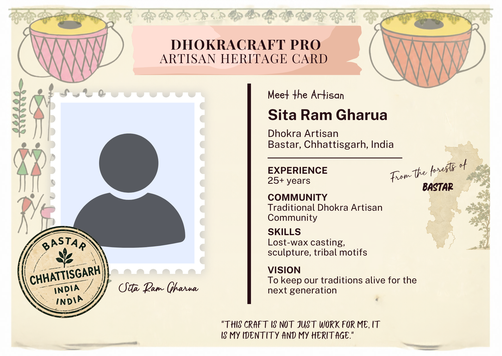
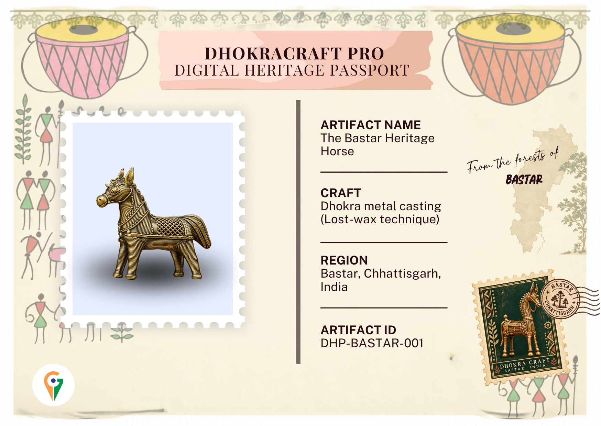
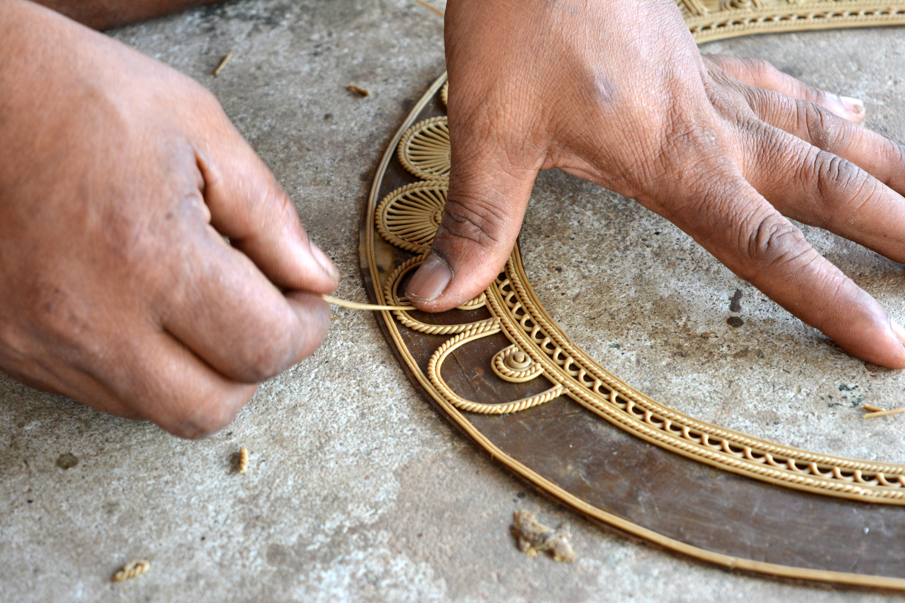

Artifact details
Craft: Dhokra metal casting
Tradition: Lost-wax technique
Region: Bastar, Chhattisgarh, India
A LIVING CRAFT. A HUMAN STORY.
Discover the object. Meet the maker. Explore the heritage.

FRONT · HERITAGE
BACK · ARTISANDRAG TO EXPLORE · TAP TO FLIP
LISTEN · LEARN · PRESERVE
Discover the tradition of Bastar Dhokra through a short demonstration narration.
Demo narration · English
Demonstration narration — not a recorded artisan interview.
THE ART OF DHOKRA
Explore the traditional lost-wax casting process, one stage at a time.

Add a photograph of this stage
STAGE 01
The artisan creates a model of the desired object using wax and carefully shapes its details.
Explore the five stages of the craft
Demonstration of the traditional process. Methods and materials can vary between artisans and workshops.
OPEN RECORD · CLEAR SOURCES · TRUST
Explore the information sources, verification status and update history behind this digital heritage record.
DIGITAL HERITAGE PASSPORT
Artifact ID: DHP-BASTAR-001
Craft: Dhokra metal casting
Tradition: Lost-wax technique
Region: Bastar, Chhattisgarh, India
The information shown is illustrative. Artifact origin, maker details and authenticity have not been independently confirmed.
Each claim should have a source that visitors can inspect.
Used for the sample artifact name and ID.
DEMO DATAGeneral process information; a specific source still needs to be added and checked.
SOURCE PENDINGConfirmation from the artisan and supporting evidence have not yet been collected.
CONFIRMATION PENDINGA demonstration timeline of changes to this record.
Initial demonstration record created.
DEMO ENTRYAdd artisan-approved details, supporting sources and verification evidence when available.
PENDINGThe artifact ID identifies this digital record; it does not by itself prove that an artifact is genuine.
Verification status should change only when supporting evidence has been reviewed. Record updates should be documented rather than silently overwritten.
Prototype demonstration · Not an official certification or independent authenticity assessment.
BEYOND THE OBJECT
Dhokra is a traditional metal-casting craft practised in different parts of India, including the Bastar region of Chhattisgarh. Every artisan's story is unique.
Artisans carry knowledge of form, detail and technique. Their own experiences and stories deserve to be heard in their own words.
Dhokra traditionally uses non-ferrous metals and alloys. The exact composition of this demonstration horse has not been independently confirmed.
In lost-wax casting, a model is used to create a mould. The wax is removed and molten metal fills the space, producing a form that can be finished by hand.
DhokraCraft Pro connects a physical handicraft with a digital record, helping visitors discover craft information and the people who make it.
About this prototype
The displayed artisan profile and artifact record are
illustrative demo content, not official certification.
Replace them with artisan-approved information and
verified product details before public use. A QR code
links to a record but does not independently prove authenticity.